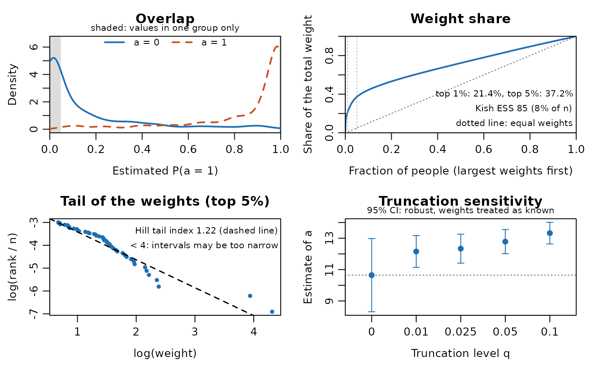
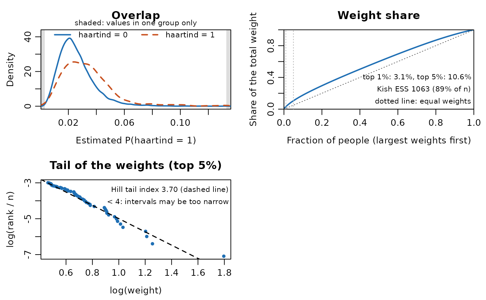

Experimental: this function is new in ipw 1.4.0. Its interface and output may change in future versions, and the methods are still being evaluated.
Plots that check whether inverse probability weights can be trusted: overlap of the estimated exposure probabilities (positivity), the share of the total weight held by the people with the largest weights, the tail of the weight distribution, and the sensitivity of a marginal structural model's estimate to truncating the weights. The numbers behind every plot are returned (invisibly), so the plots can be redrawn with any graphics package.
Arguments
- object
Result of
ipwpointoripwtm, or a list of such results whose weights multiply (e.g. treatment times censoring weights fromipwtm()on the same long data, as inipwvcov). For a list,"overlap"uses the first element (put the treatment weights first), and the other plots the product of the weights.- which
Plots to draw: any of
"overlap","share","tail"and"trunc". Plots that cannot be drawn (overlap for a non-binomial exposure model, truncation withoutmsm, too few weights in the tail) are skipped with a message; asking for"overlap"or"trunc"explicitly in these cases is an error.- msm
Optional marginal structural model, fitted with
lm(),glm()orsurvival::coxph()on the same rows, in the same order, as the weights (one row per person foripwpoint(), all rows of the long data foripwtm()). Needed for"trunc". Its data must be available whereipwdiag()is called, or where the model was fitted, because the model is refitted.- trunc
Truncation levels for
"trunc": numbers in \([0, 0.5)\).- coef
The coefficient of
msmto show in"trunc", by name or position. Default: the first coefficient other than the intercept forlm()andglm(), the first forcoxph().- top
Fraction of the largest weights used for
"tail", in \((0, 0.5)\).- ask
Logical. If
TRUE, each plot is drawn on its own page and R asks before showing the next one. IfFALSE(default) and more than one plot is drawn, they share one page (side by side for two, a 2 x 2 layout for three or four), unless a multi-panel layout was already set withpar(mfrow = ). The graphical parameters are restored on exit.- ...
Graphical parameters set with
parwhile the plots are drawn, e.g.cex = 0.8.
Value
Invisibly, a list of class "ipwdiag" with one element per
plot that was drawn, holding its data, and an element summary.
print() shows the summary.
- overlap
List:
data(data frame with the estimated probabilitypand theexposure, one row per row of the denominator model),density(list of two data framesx,y, for exposure 0 and 1),support(the range where both groups have values),exposure(its name),xlim(the plotted range) andextreme(as in the summary).- share
List:
data(data frame withfraction, the fraction of people, andshare, the cumulative share of the total weight, starting at 0, 0) andweights(the weights used, sorted from largest to smallest).- tail
List:
data(data frame withlog.weightandlog.rank, the log of rank / n, for theklargest weights),alpha(the Hill estimate),k,threshold(\(w_{(k+1)}\)), and theinterceptandslope(\(-\alpha\)) of the drawn line.- trunc
Data frame with columns
q,estimate,se,lowerandupper; attribute"coef".- summary
List with
n(number of people),unit,overlap(proportion with a probability below 0.05 or above 0.95, and the number of rows),share(named vectortop1,top5,max,mean,ess,ess.fraction),tail(alpha,k) andtrunc(the table above), for the plots that were computed.
Details
"overlap"Densities of the estimated probability of exposure level 1 from the denominator model, by exposure group (binomial exposure models only; for
ipwtmthe rows the denominator model was fitted on). The shaded ranges hold values from one exposure group only: people there have (almost) no counterparts with the other exposure, a sign of (near) positivity violations. The summary gives the proportion of people (rows) with a probability below 0.05 or above 0.95. Foripwtm()these are probabilities per interval, which are small when the intervals are short, so that proportion is not by itself a warning sign there; look at whether the two groups overlap. For other exposure families this plot is skipped with a message."share"The weights sorted from largest to smallest, with the cumulative share of the total weight plotted against the fraction of people. With equal weights the curve lies on the diagonal; a curve that rises steeply at the left means that a few people carry much of the weight. For
ipwtm()each person's final cumulative weight (the weight of the last row in time order) is used. The summary gives the share of the total weight held by the top 1% and top 5% (the largestceiling(0.01 * n)andceiling(0.05 * n)weights), the largest weight, the mean weight and Kish's effective sample sizesum(w)^2 / sum(w^2), as a number and as a fraction ofn. Stabilized (ATE) weights should have a mean close to 1; a mean far from 1 suggests a misspecified exposure model or positivity problems (ATT, ATC and overlap weights have no such target)."tail"For the largest
topfraction of the weights (the same weights as for"share"), the log of the rank divided byn(the empirical probability of a weight at least this large) against the log of the weight. A Pareto-type tail, \(P(W > x) \propto x^{-\alpha}\), gives a straight line with slope \(-\alpha\). The Hill estimate of the tail index uses the \(k\) largest weights \(w_{(1)} \ge \dots \ge w_{(k)}\): \(\hat\alpha = 1 / \{k^{-1} \sum_{i=1}^{k} \log(w_{(i)} / w_{(k+1)})\}\), with \(k\) =floor(top * n); its line is drawn. At least 20 weights are needed in the tail, otherwise the plot is skipped with a message. \(\alpha < 2\) means that the weights have an infinite variance. With \(\alpha\) between 2 and 4 the variance is finite but the third or fourth moment is not, and normal-theory confidence intervals, with standard errors fromipwvcovand from the bootstrap alike, can be too narrow (see "Heavy-tailed weights" inipwvcovand in the article "ipw and WeightIt" on the package website). The summary warns when \(\hat\alpha < 4\)."trunc"Needs
msm. For each level \(q\) intruncthe weights are truncated at their \(q\) and \(1 - q\) quantiles, exactly asipwpoint()andipwtm()do with theirtruncargument (\(q = 0\) leaves them unchanged),msmis refitted with these weights withstats::update(), and the estimate of coefficientcoefis plotted with a 95% confidence interval against \(q\). An estimate that hardly changes means that the extreme weights do not drive the result; a large change means that they do (truncation trades bias for variance, and changes slightly what is estimated). The intervals are robust (sandwich) intervals that treat the weights as known: forlm()andglm()the HC0 sandwich with the small-sample factor \(g/(g - 1)\) thatsurvey::svyglm()uses (\(g\) the number of people; for long data fromipwtm()the scores are summed within person), and forcoxph()its robust variance (robust = TRUE, or clustered by person for long data: an existingcluster()term is kept, otherwise theipwtm()id is used). Truncation at estimated quantiles is not accounted for; for proper intervals with truncated weights use the bootstrap, re-estimating and truncating the weights in each sample (section 5 ofvignette("ipw")). With a list of weight objects the product of the weights is truncated, which differs from truncating each set of weights with its owntruncargument.
Covariate balance is checked with the cobalt package (see "Covariate
balance" in vignette("ipw")), and ipwplot shows the
distribution of time-varying weights over follow-up. The diagnostics use
the untruncated weights (ipw.weights).
References
Cole, S.R. & Hernán, M.A. (2008). Constructing inverse probability weights for marginal structural models. American Journal of Epidemiology, 168(6), 656-664. doi:10.1093/aje/kwn164 .
Austin, P.C. & Stuart, E.A. (2015). Moving towards best practice when using inverse probability of treatment weighting (IPTW) using the propensity score to estimate causal treatment effects in observational studies. Statistics in Medicine, 34(28), 3661-3679. doi:10.1002/sim.6607 .
Hill, B.M. (1975). A simple general approach to inference about the tail of a distribution. Annals of Statistics, 3(5), 1163-1174. doi:10.1214/aos/1176343247 .
Author
Hung Thai Tran hungtt@oucru.org
Examples
# Point treatment: binary exposure a, confounder l, outcome y
set.seed(16)
n <- 1000
simdat <- data.frame(l = rnorm(n, 10, 5))
simdat$a <- rbinom(n, 1, plogis(simdat$l - 10))
simdat$y <- 10 * simdat$a + 0.5 * simdat$l + rnorm(n, -10, 5)
w <- ipwpoint(exposure = a, family = "binomial", link = "logit",
numerator = ~ 1, denominator = ~ l, data = simdat)
msm <- lm(y ~ a, data = simdat, weights = w$ipw.weights)
d <- ipwdiag(w, msm = msm)

d
#> Weight diagnostics for 1000 people
#>
#> Overlap: 51.9% of 1000 people have an estimated probability < 0.05 or > 0.95
#> Weights: mean 0.909, largest 74.7
#> Share: top 1% hold 21.4%, top 5% hold 37.2% of the total weight
#> Kish ESS: 84.6 (8.5% of n)
#> Tail index: 1.22 (Hill estimate from the largest 50 weights)
#> Warning: tail index < 2: the weights have an infinite variance;
#> no normal-theory interval can be trusted (see ?ipwvcov,
#> "Heavy-tailed weights").
#>
#> Truncation sensitivity for 'a' (95% CI: robust, weights treated as known):
#> q estimate se lower upper
#> 0.000 10.6 1.190 8.31 13.0
#> 0.010 12.2 0.516 11.14 13.2
#> 0.025 12.3 0.472 11.41 13.3
#> 0.050 12.8 0.394 12.01 13.6
#> 0.100 13.3 0.351 12.64 14.0
# the numbers behind the plots
head(d$share$data)
#> fraction share
#> 1 0.000 0.00000000
#> 2 0.001 0.08213552
#> 3 0.002 0.13854894
#> 4 0.003 0.15046600
#> 5 0.004 0.16201501
#> 6 0.005 0.17209837
d$trunc
#> q estimate se lower upper
#> 1 0.000 10.64661 1.1898603 8.314527 12.97869
#> 2 0.010 12.15407 0.5156372 11.143443 13.16470
#> 3 0.025 12.33490 0.4715727 11.410636 13.25917
#> 4 0.050 12.78293 0.3936489 12.011390 13.55447
#> 5 0.100 13.32342 0.3509159 12.635641 14.01121
# Time-varying weights (haartdat): treatment times censoring weights
data(haartdat)
w.haart <- ipwtm(exposure = haartind, family = "binomial", link = "logit",
numerator = ~ sex + age, denominator = ~ sex + age + cd4.sqrt,
id = patient, timevar = fuptime, type = "first",
data = haartdat)
w.cens <- ipwtm(exposure = dropout, family = "binomial", link = "logit",
numerator = ~ sex + age, denominator = ~ sex + age + cd4.sqrt,
id = patient, timevar = fuptime, type = "cens",
data = haartdat)
ipwdiag(list(w.haart, w.cens), which = c("overlap", "share", "tail"))
